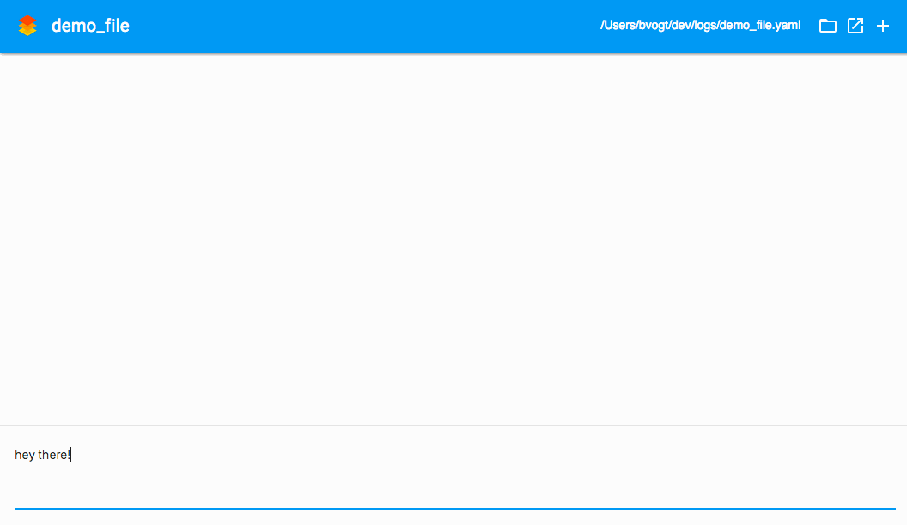
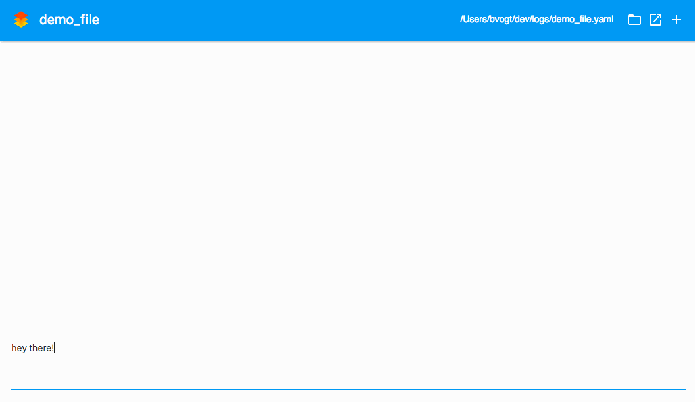

Timestamped notes written to a yaml file in the directory of your choice.
for Mac OS X


All log entries are stored as multi-line values in yaml, so you can grep from them on your host machine, without worry about encoding.
By using the /code prefix, you can save and view multiline code blocks. You can even use specific the language to get syntax highlighting in your code block. Supprted languages: objectivec, ini, bash, xml, perl, markdown, python, cs, nginx, http, sql, apache, php, java, cpp, javascript, ruby, diff, css, makefile, coffeescript, json